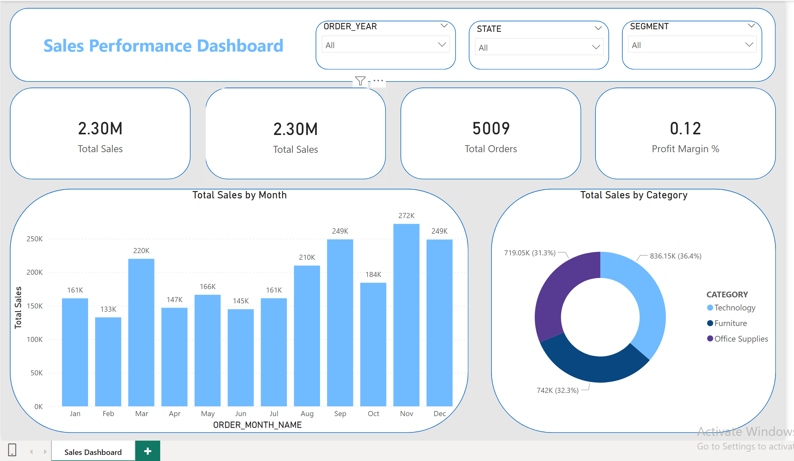

Background Information
In the modern data landscape, raw CSV files are only the starting point. This project demonstrates a complete end-to-end data pipeline that ingests retail sales data from a flat CSV file, stages and transforms it inside Snowflake, and delivers it as an interactive Power BI dashboard.
The pipeline covers every step a data analyst encounters in the real world — loading raw data, cleaning and typing it correctly, running data quality checks, and building analytics-ready tables that feed directly into business intelligence tools.
Designed to be fully reproducible and documented for GitHub, this project reflects industry best practices for structuring a simple but professional analytics workflow without requiring any external orchestration tools.
Objective
The objective is to build a clean, documented, and reproducible data pipeline that takes a raw CSV sales file and delivers a professional Power BI dashboard. This includes designing the Snowflake schema, writing transformation SQL, validating data quality across all 23 columns, and producing analytics-ready aggregation tables that Power BI can consume efficiently using Import mode.
Chapter 1: Data Preprocessing
Before transformation, raw data was loaded into Snowflake as plain strings to avoid parse errors. The following preprocessing steps were applied inside Snowflake using SQL:
- Date columns cast from
MM/DD/YYYYstring format to properDATEtype usingTRY_TO_DATE - Numeric columns (Sales, Profit, Discount, Quantity) cast using
TRY_CASTto safely handle malformed values - Returned column converted from text (YES/NO) to boolean
is_returned - Derived columns added:
days_to_ship,profit_margin_pct,order_month,order_year - Rows with null Sales, Profit, or Quantity were excluded from the fact table
Chapter 2: Snowflake Schema
Four objects were created inside Snowflake across two schemas to separate raw ingestion from analytics-ready data.
| Table | Type | Purpose | Rows |
|---|---|---|---|
raw_orders | Table | Staging — exact CSV copy | All rows |
vw_clean_orders | View | Clean & cast — no storage | — |
fact_orders | Table | BI-ready materialized table | Valid rows |
agg_monthly_sales | Table | Pre-aggregated for KPI tiles | Grouped |
agg_customer_summary | Table | One row per customer | Grouped |
Chapter 3: Data Quality Checks
A dedicated SQL file runs nine sections of quality checks against raw_orders before any data reaches Power BI. The final scorecard section outputs a PASS/FAIL result for every critical check.
Chapter 4: Power BI Dashboard
The dashboard uses Import mode — data is pulled from Snowflake once and stored inside the .pbix file for fast report rendering. Three Snowflake tables are loaded directly: fact_orders, agg_monthly_sales, and agg_customer_summary.
.PNG export from Power BI.

Chapter 5: Repository Structure
The project is fully documented and published on GitHub with a clean folder structure separating SQL, Power BI, and data files.